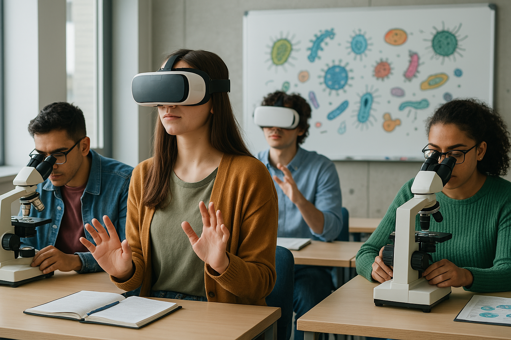

Análisis de 5 estudios clave sobre enseñanza de la microbiología en la universidad
Elaborado por Luis Acuña y Carlos Quesada
Desliza para explorar ↓
La microbiología, como ciencia base en salud y biotecnología, enfrenta el reto de ser enseñada de forma significativa en entornos digitales e híbridos.
"Aprender microbiología hoy es aprender a pensar científicamente sobre la vida invisible."
Enfoque: Cuantitativo. Comparación entre VR, escritorio y diapositivas. Pruebas, encuestas y eye-tracking.
Temática principal: Educación inmersiva.
Temáticas secundarias: Evaluación objetiva, atención visual.
DOI: 10.1145/3544548.3580913Enfoque: Cuantitativo. Encuestas Likert sobre percepción del uso de TIC.
Temática principal: TIC en educación.
Temáticas secundarias: Motivación, autoaprendizaje.
DOI: 10.15517/revedu.v48i2.58294Enfoque: Cualitativo. Investigación-acción. Aplicación de metodologías activas.
Temática principal: Estrategias didácticas activas.
Temáticas secundarias: Participación, comprensión.
DOI: 10.37811/cl_rcm.v8i5.14235Enfoque: Mixto. Diseño de entorno en Google Classroom. Encuestas + validación.
Temática principal: Entornos virtuales.
Temáticas secundarias: Contenido digital, motivación.
DOI: 10.18779/csye.v8i2.886Enfoque: Mixto. Diagnóstico pedagógico, diseño instruccional y prueba.
Temática principal: Materiales híbridos.
Temáticas secundarias: Teoría-práctica, diseño pedagógico.
Enlace: Ver artículo| Categoría | Ejemplos de prospectiva |
|---|---|
| Tecnología educativa | Realidad aumentada, IA adaptativa, laboratorios virtuales interactivos |
| Didáctica avanzada | Simulaciones, juegos serios, evaluación de pensamiento crítico |
| Evaluación del aprendizaje | Analítica, biomarcadores de atención, modelos predictivos |
| Inclusión y accesibilidad | EVA accesibles, diseño para diversidad cognitiva y sensorial |
| Contexto y aplicación | Microbiología en regiones rurales, interdisciplina con salud pública |
"La innovación educativa en microbiología no es una opción, es una necesidad científica y social."
¿Qué línea de investigación te gustaría liderar tú?